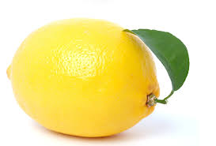
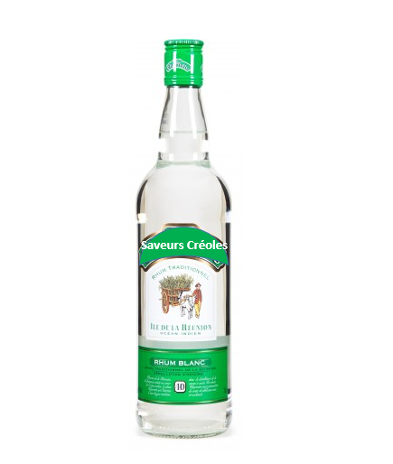

-
Les ingrédients
Les ingrédients
Le punch "saveurs créoles" est fait à base de produits de qualité.
Ces ingrédients ont été choisis scrupuleusement par nos experts pour éveiller vos sens.La vanille Bourbon
La Vanille Bourbon utilisée par « Saveurs Créoles » est cultivée en sous-bois par les producteurs essentiellement installés sur la côte est de l’île, entre les communes de Sainte-Suzanne et Saint-Joseph. Grace à des techniques de fabrication ancestrales, ses gousses brunes et fines achalent le plus doux des parfums.
La noix de muscade

La noix de muscade est une épice à la saveur chaude et légèrement sucrée qu'il faut utilisée avec parcimonie car elle est puissante. Nous l’utilisons dans nos recettes pour relever le goût du punch et ainsi en faire une boisson exceptionnelle.
Le Clous de Girofle
Les clous de girofle ont un arôme pénétrant, chaud et riche. Ils sont récoltés par nos producteurs locaux installés aux quatre coins de l’île, lorsqu'il se teinte de rose pour ensuite être séchés au soleil et prend alors une couleur brun foncé.
Citron
Le citronier a besoin de soleil et de chaleur, sa culture est donc favorisée à La Réunion. Le citronnier offre un beau feuillage, une floraison parfumée et de bons citrons juteux tout au long de l'année. Le citron apporte Une acidité mordante, iodée, pas épicée, très vive à nos compositions.
La Canelle
La cannelle est une substance végétale aromatique provenant de l'écorce interne du cannelier. Sa forme d’origine ressemble à de petits tubes, mais on la consomme souvent moulue. Très appréciée pour sa saveur parfumée, elle est également riche en antioxydants potentiellement bénéfiques pour la santé.
La noix de Coco
Cet arbre plein de richesses est un palmier qui pousse dans les milieux tropicaux et donne des fruits toute l'année. Lisse, il est de couleur vert clair quand il n'est pas mûr et orangé brun quand la noix est à maturité. La baie de Saint-Paul est l’endroit parfait pour admirer les longues allées de cocotier.
L'ananas Victoria
L'ananas fait l'objet d'une culture intensive, qui en fait pour l'île l'une des toutes premières cultures fruitières. On en retrouve dans de nombreuses zones, mais essentiellement sur Petite île, le long de la rivière Langevin ou à proximité de Saint Benoit. L'ananas victoria à la réputation d'être sucrée et très parfumée.
La Goyave
Cette myrtacée pousse un peu partout dans les jardins de l'île. Blanche, jaune ou rose orangée. La goyave a une saveur douce, musquée et très aromatique, ce qui est normal pour un fruit de la même famile que la cannelle, du girofle ou de la muscade.
La Grenade
Le grenadier est présent depuis fort longtemps à la Réunion. Arbuste buissonnant, il reste de petite taille (3 m maximum). Très souvent cultivé à des fins ornementales on en retrouve fréquemment dans les jardins créoles. Il est même naturalisé dans les hauteurs de Saint Leu
Le Letchis
Fruit roi des tables réunionnaises, le Letchi est attendu et guetté avant son arrivée. L'arbre, très commun à la réunion peut atteindre des dimensions imposantes. Son goût très sucré permet d’obtenir des goûts très prononcés et somptueux.
Le Rhum Blanc
Véritable emblème de la culture créole, le Rhum Blanc s’inscrit dans le patrimoine gustatif de la Réunion. Depuis 1943, Saveurs Créoles fait perdurer la tradition et affirme son identité de rhumier en distillant des Rhums Blancs devenus références.
Sirop de canne

Le concentré de jus de canne à sucre, aussi appellé « Sirop la cuite » est directement issu de la défibrillation de la canne, juste avant la cristallisation pour la fabrication des sucres. De ce fait il contient donc tout le sucre, les parfums,les oligo-éléments et les sels minéraux de la canne à sucre.